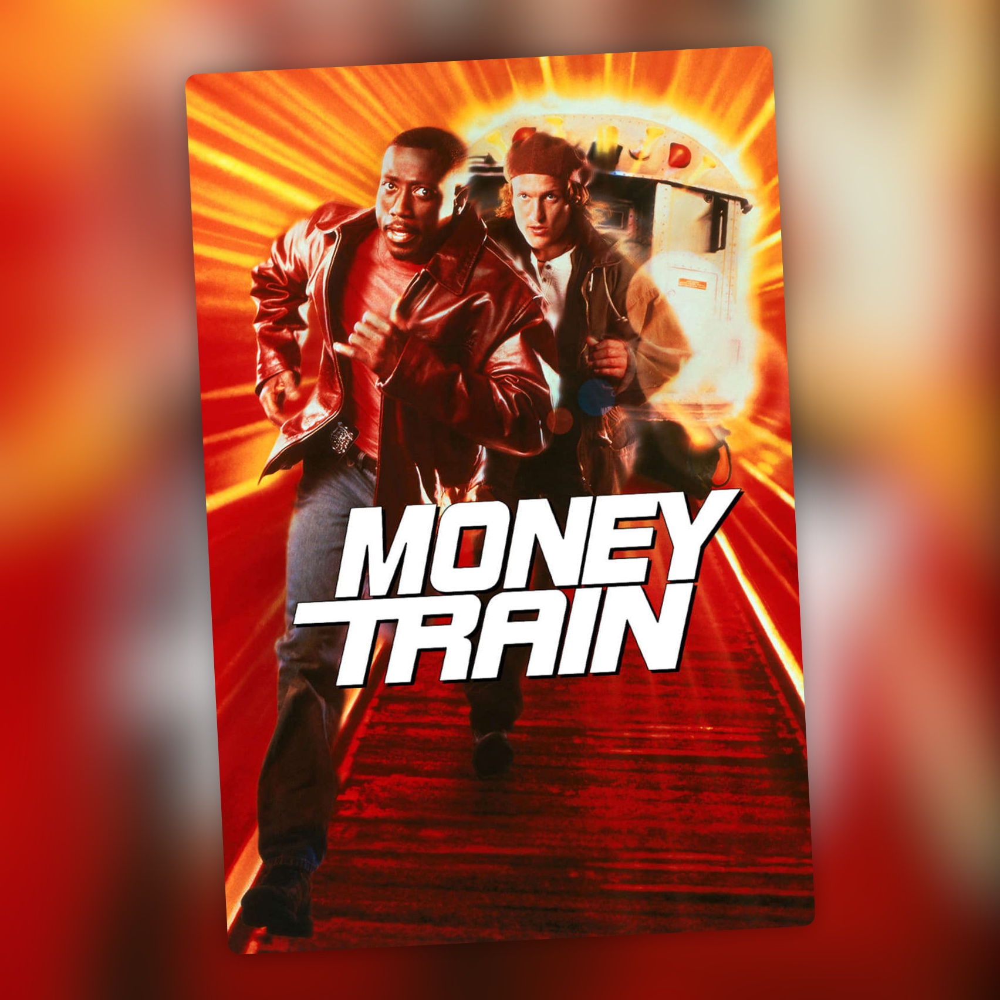

Asalto al tren del dinero (1995)
Snipes y Harrelson vuelven a juntarse, esta vez en el metro de Nueva York

Después del éxito de Los blancos no la saben meter, Wesley Snipes y Woody Harrelson parecían la pareja de moda en Hollywood. Su química había funcionado tan bien que tres años después los juntaron otra vez, ahora como policías del metro de Nueva York.
Son John y Charlie, hermanos adoptivos. John (Snipes) es el responsable, el que intenta mantener las cosas bajo control. Charlie (Harrelson) es el que siempre anda metido en líos y con problemas de dinero. Entre los dos aparece Grace (Jennifer Lopez), otra agente del metro por la que ambos terminan interesados. Cuando Charlie se queda sin trabajo y sin salidas, se le ocurre asaltar el tren del dinero, el convoy blindado que recoge la recaudación de las estaciones. Su hermano, mientras tanto, sigue siendo policía.
Lopez estaba dando sus primeros pasos importantes en el cine, después de My Family. Todavía recuerdo la polémica que hubo por su escena de sexo con Snipes.
La química entre los dos protagonistas sigue siendo lo mejor de la película. Se entienden y disfrutan compartiendo escenas, aunque aquí el guion lleva su relación por caminos más conflictivos que en Los blancos no la saben meter.
Mi problema está en el guion. Esperaba una comedia de acción con atracos y persecuciones por el metro, y lo que hay es mucho tiempo dedicado a discusiones y a los problemas personales de los hermanos. Las escenas de acción llegan menos de lo que me habría gustado. La historia tarda demasiado en llegar a lo que promete el título.
Cuando por fin toca ponerse con el tren del dinero, la película mejora bastante. Todo el tramo final, con el asalto y el caos en los túneles, tiene la acción que echaba de menos durante el resto del metraje. El desenlace tiene la energía que le falta a buena parte de lo anterior.
La dirige Joseph Ruben, el de El padrastro y Durmiendo con su enemigo, que entró en el proyecto cuando Tony Scott, que lo había estado desarrollando, lo dejó. El guion es de Doug Richardson y David Loughery. Richardson había firmado La jungla 2: Alerta roja y ese mismo año escribió Dos policías rebeldes; Loughery venía de Pasajero 57, también con Snipes.
Lo más curioso del rodaje es el decorado. La idea era filmar en el metro de verdad, pero resultó inviable y acabaron construyendo en Los Ángeles una estación con cuatro vías. Según las informaciones de la época, tenía casi un kilómetro de largo y costó unos 4,5 millones de dólares. Los vagones eran de metro real.
Me ha resultado entretenida, sobre todo cuando deja de dar vueltas a los problemas de los hermanos y se pone con lo que uno espera de una película así. Snipes y Harrelson siguen teniendo química y Lopez aporta lo suyo. Me habría gustado más tren y menos discusión, porque con esta pareja y este escenario se podía haber hecho algo bastante más divertido.
Ficha técnica
- Título original: Money Train
- Título en España: Asalto al tren del dinero
- Dirección: Joseph Ruben
- Guion: Doug Richardson y David Loughery
- Reparto principal: Wesley Snipes, Woody Harrelson, Jennifer Lopez, Robert Blake y Chris Cooper
- Año: 1995
- Duración: 112 min
- Plataforma(s) actual(es) en España: Netflix